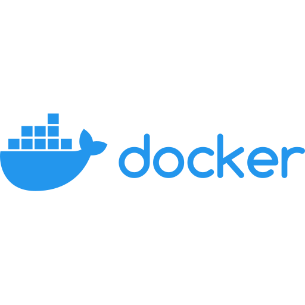
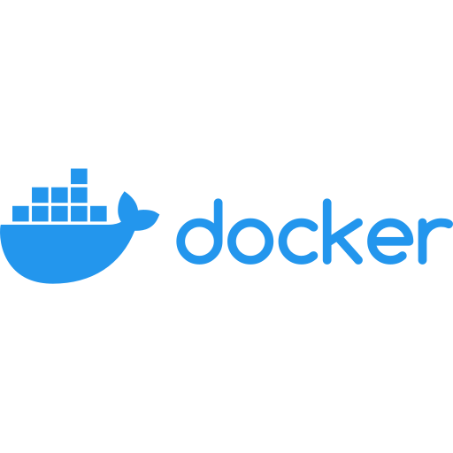

Общая информация
Имя: Daniil
Фамилия: Marichuk
Пол: мужской
Дата рождения: 1996-10-26
Город: Пенза
Языки:
- Английский: C1
- Французский: B2
- Немецкий: B1
Эл. почта: d_marichuk@mail.ru
Навыки


 

Опыт работы
-
Компания: РусМолко
Позиция: Разработчик
Начало: 2021-05-12
Конец: по настоящее время
Описание: РусМолко это часть Olam Food Ingredients и специализируется на производстве выскокачественного молока.
Моя задача как разработчика, извлекать, очищать и агрегировать данные из различных систем, заносить их в БД и выводить их в дэшборд.
Образование
-
Место: ПГУ
Специальность: Методика преподавания иностранных языков
Период: с 2014-09-01 по 2019-06-01
О себе
Во время начала пандемии начал изучать Python, так как из за специфики предыдущей работы появилось много свободного времени. Записался на курсы в Яндекс.Практикум и понеслась. Втянулся сразу, так как обожаю задачки на логику и оптимизацию процессов, а Python предоставил для этого богатую почву. Простой синтаксис, поддержка различных парадигм, универсальность, философия Zen of python и практически бесконечное количество библиотек под всевозможные нужды. Rule 34 of Python "There is library of it. No exceptions.”
От работы хотел бы увидеть, в первую очередь, возможность обмениваться опытом. Так как работая в одиночку, очень часто приходится наступать на грабли, который можно было бы избежать, если был бы взгляд со стороны.
В свободное от работы время люблю кодить 🙃, смотреть авторское кино, залипать на кейкапы для механических клавиатур на алиэкспрессе, дегустировать specialty-кофе и экспериментировать с рецептами крем-брюле. Могу провести кулинарный мастер-класс (бесплатно, если у вас работаю ;-) ).